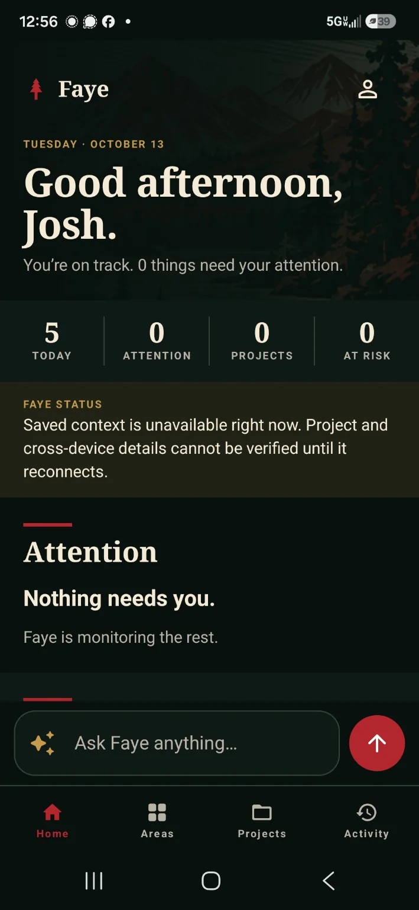
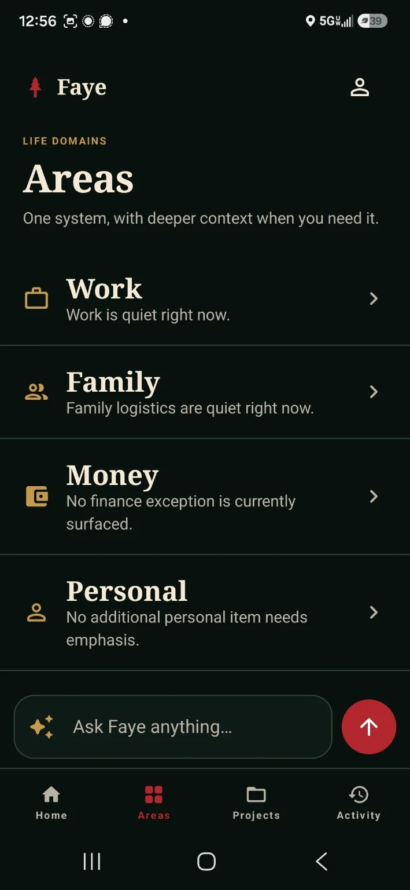
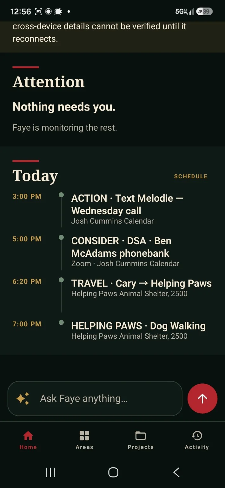
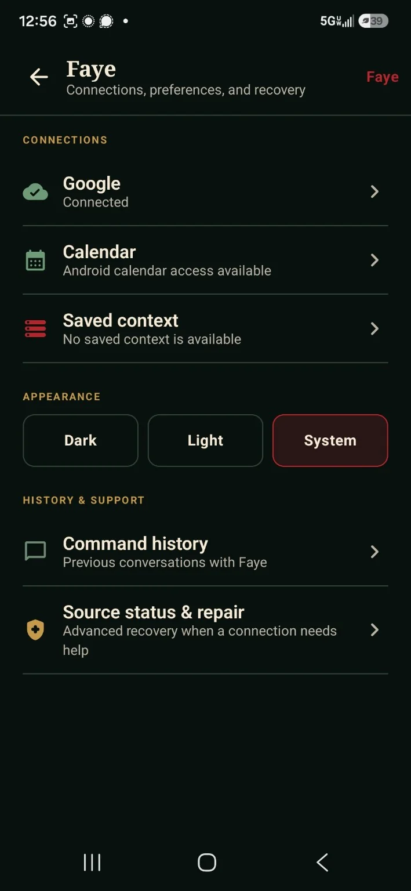

All work
Independent product
Faye
A personal AI operating system designed to reduce administrative work by connecting context, memory, reasoning, governed actions and a calm interface.
Premise
Less administration. Clearer decisions.
Faye treats AI as an operating layer across planning, memory, projects, communications and decision support. The goal is not more chat. The goal is less clerical work.
Current product




Convenience should not erase control.
Governance
Planning, approval, execution and verification stay separate.
Ambiguous commands fail closed. Stale targets are not silently reused. Source problems surface their impact rather than inventing state.
25calendar-policy regression checks
60backend Python tests
12HTTP integration tests
20.1major redesign lineage
One documented validation cycle.